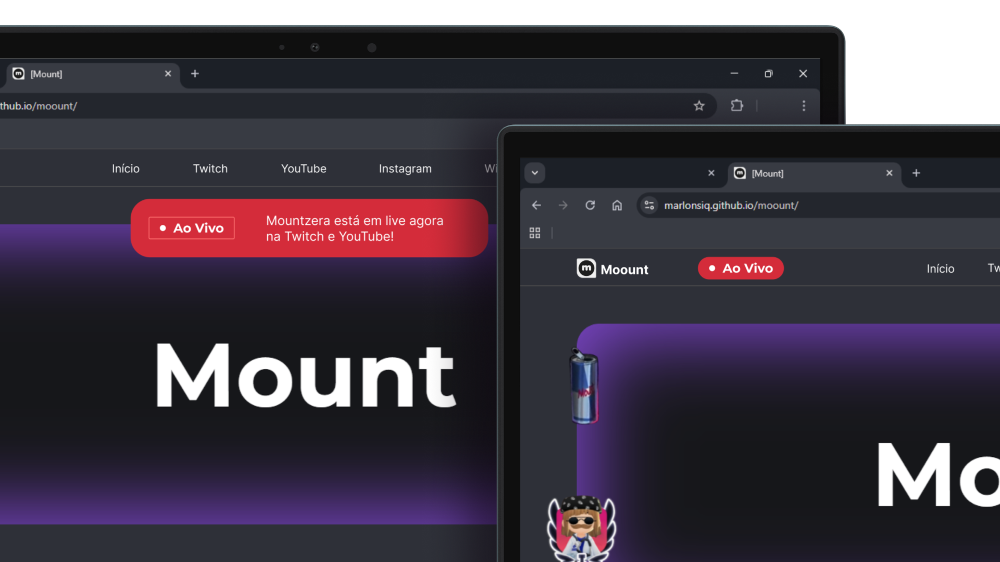
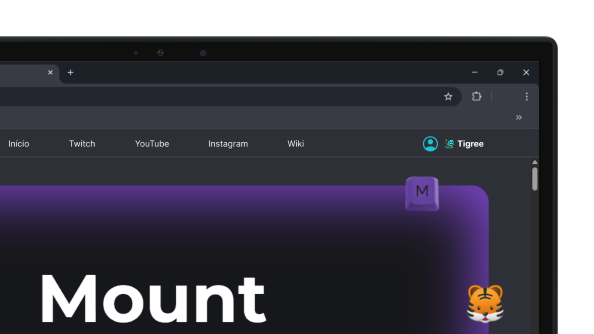

1
Permitir conhecer, de forma limitada, quem é o Mount, e um pouco mais de sua história.
2
Lista toda sua rede de comunicação: canais do Youtube, Instagram, Twitch, Discord e Whatsapp.
3
Informações sobre PCs, e comandos para o chat no YouTube ou Twitch.
4
Wiki: Linha do Tempo.
Devido ao curto prazo de execução do site, várias funcionalidades não puderam ser adicionadas. Veja abaixo features que podem ser adicionadas para enriquecer o projeto.
1
História completa sobre o streamer Gabriel e o Mount, e timeline.
2
Rede de Comunicação mostrando postagens recentes no Youtube.
3
Informações completas sobre os PCs, com periféricos.
4
Wiki: Cinemount (informações sobre sessões), Fanarts, FAQs, Blog, etc.
5
Aviso quando estiver Ao Vivo no YouTube e Twitch.
6
Listagem de Lives anteriores e a programação delas (Moderadores deixarem de usar o docs e documentarem no site).
7
Integrações com o Youtube e Twitch para criação de perfil.
8
Eventos especiais para a Comunidade: Carteirinha Mamamount/inscrição por 24 meses (por exemplo) no canal. Desafios de pixel art no Wplace, sessão Cinemount, etc.
9
Responsividade para mobile e outros tamanhos de tela.